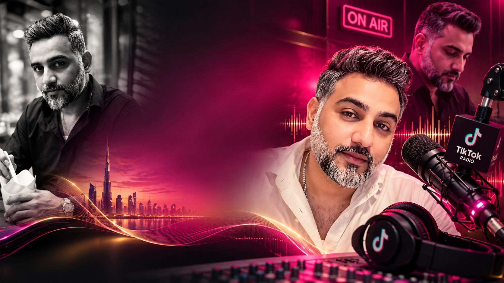
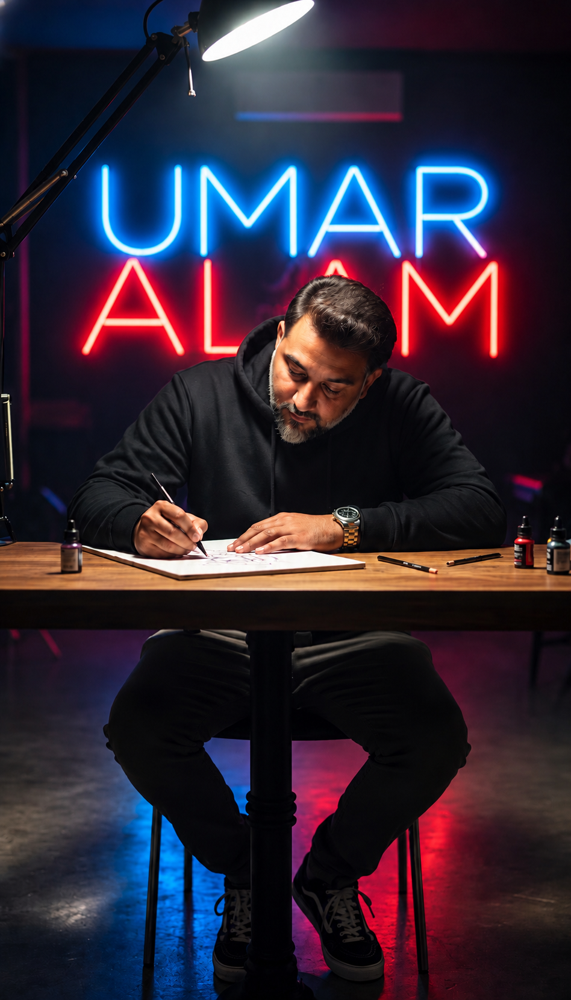
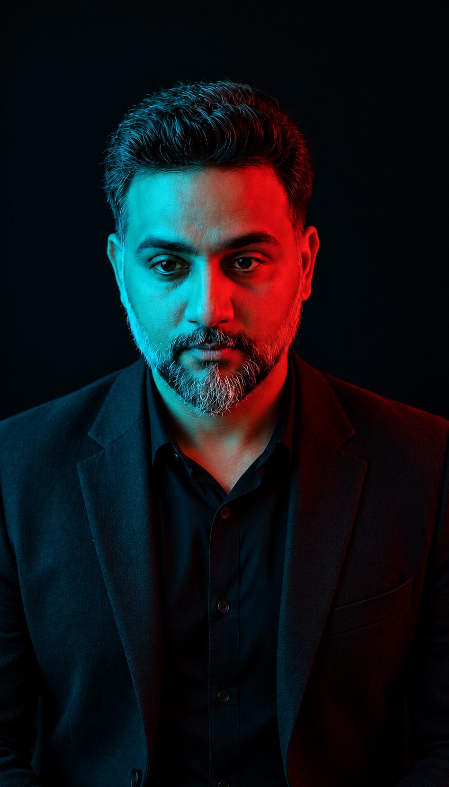

2018
Beautiful Voice of the Capital of Pakistan
Recognized for a distinctive voice and passion for broadcasting and communication.
A voice that connects people.
A passion that inspires stories.
A Pakistani media personality based in the UAE, bringing more than 15 years of broadcasting experience together with digital storytelling, artist promotion, and a genuine passion for people.

Umar Alam is a Pakistani media personality, radio broadcaster, entertainer, media entrepreneur, and digital creator based in the United Arab Emirates. With over 15 years of experience in radio broadcasting and hosting, he has built his career around communication, entertainment, storytelling, and meaningful audience engagement.
After spending eight years in the United Kingdom, Umar gained international experience and established a media company focused on managing and promoting Pakistani singers—helping artists reach wider audiences and new opportunities.
Today, his digital presence includes interactive TikTok LIVE sessions and conversations about relationships, family values, social issues, and everyday experiences that bring people together.

From radio broadcasting to digital entertainment, Umar brings together traditional media experience, international exposure, entrepreneurship, and modern audience engagement.
His work in artist management and music promotion reflects a continuing commitment to Pakistani musical talent. Through digital media, he connects directly with audiences and creates space for open, thoughtful conversations.
His professional journey spans Pakistan, the United Kingdom, and the United Arab Emirates.

Urdu poetry and literature hold a special place in Umar’s life. He values the language’s ability to express emotion, reflect on life, and connect hearts. For him, poetry is more than words—it gives meaning to everyday experiences and creates a shared understanding between people.
Through broadcasting, digital content, music promotion, and Urdu poetry, Umar continues to pursue his vision of inspiring, entertaining, and bringing people together.
Recognized for a distinctive voice and passion for broadcasting and communication.
Honoured at the Glam Girls event held at The Act Hotel in Sharjah, UAE.
Recognized as a media personality and digital influencer by Pakistan Social Center, Sharjah.